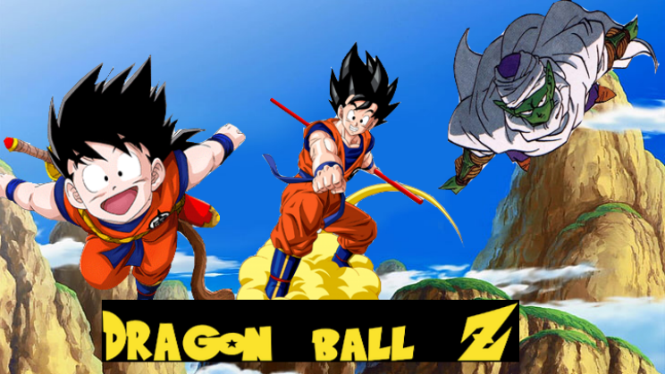

Collage

This was the 2nd project we did in photoshop by ourself. In this project we took 3-4 images from web related
to each other so we can create a collage. Then, we add all image to different layers and removed all unwanted parts
from the image that were not necessary. We used patch - content aware tool to blend the background so it look like
it was a 1 image. It was our 2 project and new to photoshop so it didn't go as I thought but it was great at the end.
The collage was of playing cricket. First, I got image from web of batsman, ball and wicketkeeper. Then, added them in
layers and removed unwanted parts from it. Finally, merege them to 1 layer and blend it with background to make it look